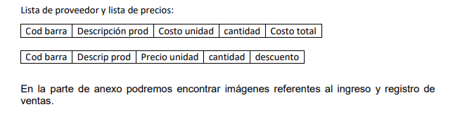

realizamos una entrevista y encuesta al dueño del local con preguntas referentes a la funcionalidad del local, la forma de comunicación entre ellos, y algunas preguntas específicas, la cual se encuentra detallado en el anexo
En la entrevista con el dueño, pudimos ver que tiene buen desempeño con la tecnología y busca poder adaptarse a las actualizaciones tecnológicas, para poder generar más ingresos a su local, también detectamos que la pareja es quien maneja las decisiones del lugar, tanto en la compra como en la actualización de precios, también notamos que el trato entre los integrantes familiares y el personal se da de manera amigable e informal, muy poca información se da de manera oficial, comúnmente se dejan notas o escritos donde se informa la novedad. Por medio de este método observamos la falta de personal en las horas donde más gente se encuentra en el local, como así también una deficiencia a la hora de la administración de recursos tecnológicos en esos momentos, también se puede observar que los precios de los productos están a vista del cliente que, en muchos casos de no ser actualizado a tiempo, presenta un inconveniente para el local
Documentos Cualitativos: Pudimos observar que dejan escritos con las novedades para el siguiente turno, con contraseña, usuarios de páginas de proveedores, y página del local a mano, Lemas “la más alta calidad” haciendo referencia a sus productos y atención
Documentos Cuantitativos: Pudimos ver que registran las ventas diarias en un libro/cuaderno escrito a mano, la actualización de precios se hace mediante la factura de la compra al proveedor, con anotación de los precios calculados en la misma hoja, y con la etiquetadora se ponen los precios a cada producto manualmente
Con un diseño similar a este:
